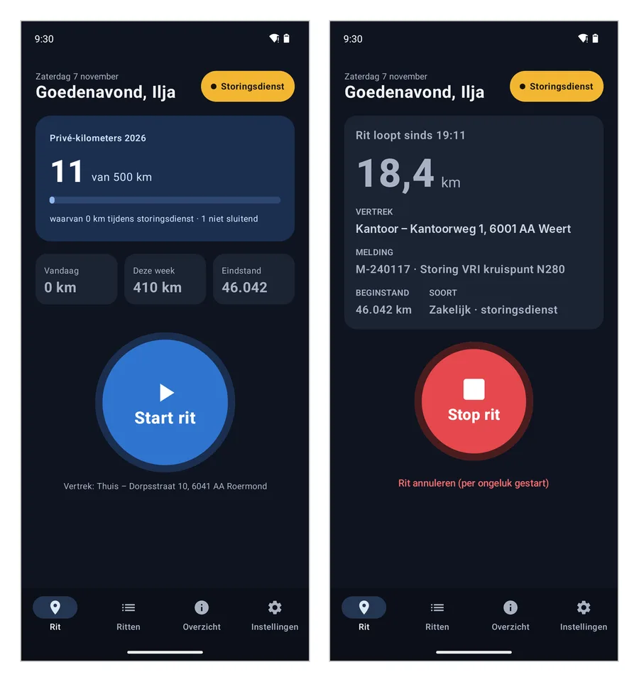
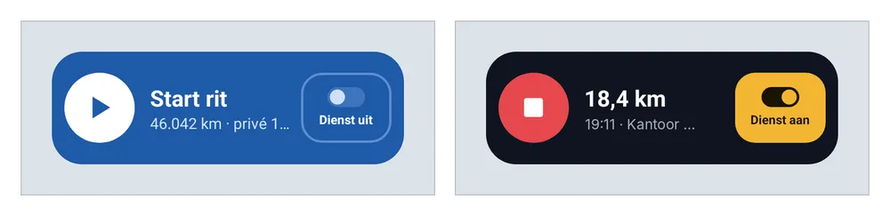

Rittenregistratie
Android-app
Houdt de ritten van een bedrijfsbus bij voor de bijtelling, zonder papieren rittenboek.
- Rit starten en stoppen met GPS, adressen automatisch ingevuld
- Widget op het startscherm, ook voor de storingsdienst
- Hectometerpaal opzoeken bij storingen langs de weg
- Overzicht zakelijk/privé, export naar PDF en CSV
In gebruik, ook door collega'sAndroid · GPS · lokale opslag